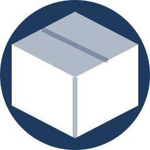

.png)
JCK Life Changers
NPO · Reg. 174-699
NPO · Reg. 174-699
Dignity & Education
Free sanitary products for schoolgirls and women in need — keeping girls in class, restoring dignity, and breaking the cycle of poverty that menstruation should never cause.
Period poverty is one of the least discussed but most damaging forms of poverty affecting girls and women in South Africa. When a girl cannot afford sanitary products, she is forced to make impossible choices — and too often, school is the price she pays.
JCK Life Changers runs the Sanitary Dignity Drive to provide free sanitary products to schoolgirls and women in need across Mamelodi. We do this without shame and without judgement, because dignity is not a luxury — it is a right.
The numbers are stark: 1 in 10 South African schoolgirls misses school or drops out entirely because they lack access to menstrual products. This accounts for up to 20% of the academic year — lost to a problem that costs less than a loaf of bread to solve.
When girls miss school, they fall behind. When they fall behind, they lose confidence. When they lose confidence, they stop attending. What begins as period poverty can end as a lost future. JCK Life Changers is determined to break this cycle.
We do not only distribute products — we also share menstrual health information to reduce shame and stigma. Many girls grow up without accurate information about their own bodies. Our volunteers engage sensitively and respectfully, creating space for questions and honest conversation. Knowledge is dignity too.
1 in 10 schoolgirls skips school or drops out because they lack access to menstrual products.
Girls affected by period poverty can miss up to 20% of the school year — directly limiting their future opportunities.
We distribute products in a safe, discreet, and dignified way — no girl should feel embarrassed about her biology.
"Period poverty is solvable. It requires only the will to act. JCK Life Changers has that will — and we act every time a girl needs us."
Support This Programme
Your donation of sanitary products or financial support can keep a girl in school and restore a woman's dignity. Every pad donated is a day of education protected.

Donate ProductsContact Chairman Ps. Joseph Sithole on 073 487 5598 to get involved.